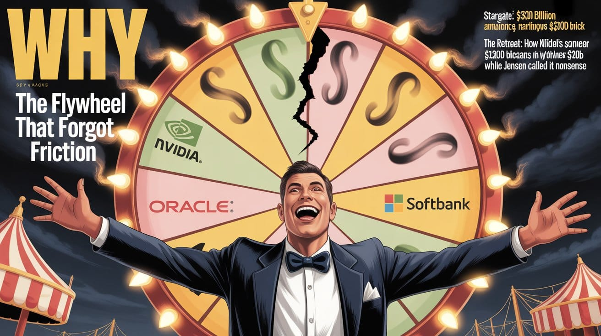

Dear Sam,
On vendor-financed delusions, circular capital, the $100 billion retreat nobody wants to name, and what it means that the CFO of the world's most important AI project doesn't bother with the money flywheel.
Open letter to Sam Altman, CEO of OpenAI
The Flywheel That Forgot Friction

Dear @Sam,
$86 BWhat has followed is the $86 billion round, the $6There is a specific species of financial architecture that only gets built when everyone in the room has decided, collectively and without saying so aloud, not to ask the obvious question. The obvious question being: who actually owns what, who owes what to whom, and what happens when the music stops?
The Stargate Project is that architecture. And it is magnificent, in the way that all great confidence structures are magnificent before the arithmetic catches up with them.
Let us begin, as always, with what you said.
"People talk about how much energy it takes to train an AI model," you offered, in the tone of a man who believes he is about to say something profound. "But it also takes a lot of energy to train a human. It takes like 20 years of life and all of the food you eat during that time before you get smart."1
We will return to this. Not because it is the most consequential thing you have said, it isn't, but because it is the most revealing. It is a window into the operating system: the rhetorical move that substitutes poetry for accounting, philosophy for responsibility, and profundity for the answer you don't want to give.
The answer you don't want to give, in this case, is that OpenAI's energy consumption is real, documented, growing, and entirely unaddressed by the observation that children eat food.
$100 BSpecifically: the $100 billion that just quietly became $20–30 billion, the flywheel that nobody bothers with, and the fact that your…But we have bigger fish to fry. Specifically: the $100 billion that just quietly became $20–30 billion, the flywheel that nobody bothers with, and the fact that your company was projected to run out of cash by mid-2027 at a valuation of $830 billion.
These facts would like a word.
Act I - December 8th, 2023: The Day the OpenAI, Closed
Most obituaries are written after the death, however for OpenAI, it was written before anyone admitted there had been a death. The more sophisticated approach and with hindsight even more revealing.
On December 8th, 2023, Mistral AI — a French startup, less than one year old, funded at a fraction of OpenAI's war chest — released a fully capable large language model as a BitTorrent file.2 A torrent. The distribution mechanism of teenage software pirates and Linux enthusiasts. Free. Open. Downloadable by anyone with an internet connection and 40 gigsabytes of storage.
The moat wasn't the model. It never was. Mistral uploaded a torrent and the valuation premise died.
Here's what Mistral actually proved: OpenAI had a window, not a moat. Two years, maybe three, where the distance between them and everyone else was real enough to build a story on. The fundraising, the Microsoft deal, the nonprofit-to-profit contortion — all of it was priced as though that window was a wall. It wasn't. It closed. And the $830 billion valuation is still standing in front of where the wall used to be.
The competitive narrative that underpins an $830 billion valuation requires that OpenAI exist at a permanent, uncloseable distance from its competitors. Mistral permanently closed that narrative on a torrent tracker. What has followed is the $86 billion round, the $6.6 billion raise, the $40 billion reportedly in progress, and the Stargate circus is not growth. It is momentum from a story that the facts stopped supporting roughly twenty-six months ago.
This is not a minor point to acknowledge and move past. It is the premise of everything.
Act II - The Nonprofit That Ate Itself
In 2015, OpenAI was founded as a nonprofit.3 Not as a nonprofit-adjacent vehicle. Not as a public benefit corporation. A nonprofit, with a mission explicit enough to quote directly: to ensure that artificial general intelligence benefits all of humanity. The founding structure was designed to prevent any individual or entity from capturing the value of AGI. You personally received approximately zero dollars in equity.
5 Mi5 Microsoft threatened to hire the entire staffWhat followed is a case study that should be required reading in every governance program in the world. Not because it is unusual, but because it is perfectly documented and entirely legible, and yet the tech press covered it as though each step were a reasonable business decision in isolation.
2019: A "capped profit" subsidiary is created. Investors can receive returns up to 100x their investment.4 You receive equity in the new structure. The "cap" is presented as a meaningful constraint. It is not. At the valuations subsequently attached to OpenAI, 100x returns represent transfers of wealth so large the word "cap" becomes a rhetorical ornament.
2023: The board, exercising the exact governance authority the nonprofit structure was designed to preserve, fires you. This was not a coup. This was the mechanism working as designed. Fiduciaries concluded you were not "consistently candid." They acted.
What happened next took five days.5 Microsoft threatened to hire the entire staff. Employees signed letters. You returned. The board members who had exercised their legal authority were gone. The nonprofit oversight function, the architecture specifically designed to prevent mission capture, was neutered in real time, on camera, and the dominant narrative in the tech press was whether Sam Altman would be okay.
From $0 to an estimated $10 billion in personal equity. On a nonprofit mission. That is not drift. That is the complete inversion of a founding purpose, executed slowly enough that each step looked like a business decision.
2024–2025: The conversion to a for-profit public benefit corporation is announced. The nonprofit retains a minority equity stake in the company built to advance its mission. The structure that was supposed to prevent AGI value capture now holds a minority position in the entity capturing AGI value.
7%Bloomberg reported a plan to grant you a 7% equity stake worth over $10 billionBloomberg reported a plan to grant you a 7% equity stake worth over $10 billion. You denied it at an all-hands meeting. The restructuring completed anyway.
Let us be precise about what this is. It is not complexity. It is not the inevitable result of needing capital to compete. It is the complete inversion of a founding purpose, executed over nine years, slowly enough that each individual step seemed defensible while the cumulative arc described the exact outcome the original structure was designed to prevent.
Act III - Stargate, or: The Architecture of Circular Conviction
In January 2025, you got a president to stand next to you and read a number off a piece of paper. The number was $500 billion. Nobody in that room had $500 billion. Nobody in that room had a coherent plan for where $500 billion would come from. What they had was a press conference, which in the current economy is apparently close enough. SoftBank, Oracle, OpenAI. Masayoshi Son beaming. Jensen Huang in his jacket. The whole production.
It was a tremendous announcement. It was also, examined carefully, a set of interlocking commitments between entities that share cap tables, supply each other's demand, and finance each other's valuations in a loop that the project's own leadership has described as a "money flywheel."6
Here is the structure, as documented:
NVIDIA announced, in September 2025, a letter of intent to invest up to \$100 billion in OpenAI, progressively, as each gigawatt of compute came online.7 OpenAI would then spend that capital on NVIDIA systems. NVIDIA would recognize GPU sales as revenue. NVIDIA's stock price, already pricing in AI infrastructure demand, would benefit from the confirmation of that demand. OpenAI would receive both capital and a supply commitment. Jensen Huang called it "the next leap forward."
What this is, structurally, is NVIDIA issuing itself a purchase order through an investment. NVIDIA "invests" in OpenAI; OpenAI commits to buy NVIDIA chips; NVIDIA books the revenue; NVIDIA's valuation reflects the revenue; NVIDIA's valuation supports its ability to make further investments. The money goes around the circle, touching hands at each stop, and at each stop the transaction is real.
The circularity is not fraudulent. It is structural. And NVIDIA is not the only loop.
CoreWeave, in which NVIDIA is a significant backer, buys NVIDIA GPUs, builds data centers, and sells capacity to OpenAI.8 AMD agreed to supply OpenAI with six gigawatts of compute, in exchange for which OpenAI could purchase 160 million AMD shares at one cent apiece.9 One cent. AMD bought access to OpenAI's balance sheet with sweetheart equity; OpenAI got cheap compute commitments to put in a press release.
The CFO-equivalent of the most important AI project in the world doesn't bother with the money flywheel. This is the sentence that explains everything.
The total commitment stack, as reported: Microsoft Azure at $250 billion, Amazon AWS at $38 billion over seven years, Oracle at $300 billion over five years.10 Plus Stargate's $500 billion headline. Plus the NVIDIA $100 billion. Altman has cited total commitments of \$1.4 trillion.
Against revenues estimated at approximately $20 billion annually. Against operating costs estimated at more than $17 billion annually.11 Leaving a margin so thin that "margin" is too generous a word for it; a rounding error, a bad quarter, a competitor's open-source release away from the cash position that analysts had already projected would become critical by mid-2027.
An $830 billion company that might run out of money within eighteen months. Running on commitments that are, in several cases, literally financed by the counterparty's investment in OpenAI itself.
Act IV - January 31, 2026: The First Smart Person in the Room
The last day in January 2026, an adult at NVIDIA apparently got access to OpenAI's actual financials. The $100 billion evaporated.12 What replaced it was $20–30 billion and a press tour where Jensen Huang said the friction reports were "nonsense" while simultaneously confirming them. The discussions stalled.
Jensen Huang went to Taipei and called the friction reports "nonsense," confirming NVIDIA would "absolutely" participate in OpenAI's fundraising. He was also explicit about what had changed: the investment would be "nothing like" $100 billion.13
I’ll give you a hint at what changed between September 2025 and January 2026 — it wasn’t the technology. The technology continued to improve on the vectors it had been improving on. What changed was that someone inside NVIDIA ran the arithmetic on the circular financing concerns that critics had been raising for months and decided that $100 billion was too much exposure to a structure that might not survive long enough to generate the returns justifying the investment.
This is, to be clear, NVIDIA, the company that built its entire market cap on AI infrastructure demand, deciding that one of the primary engines of that demand was too financially precarious to underwrite at the headline figure.
NVIDIA looked at the structure, ran the numbers, and declined to put $100 billion into a customer that might not exist in three years to buy the chips they'd be financing.
The Stargate project itself has been stalled by disputes between partners over who actually owns the data centers being built.14 OpenAI initially wanted to own the infrastructure outright. Investors balked — this is the investors in a company projecting cash crisis by 2027 balking at the capital requirements, which should tell you something about what the investors actually believe versus what they say in press releases. The result: SoftBank owns and develops the sites; OpenAI controls design and holds long-term leases. The assets that were supposed to anchor OpenAI's independence now sit on someone else's balance sheet.
OpenAI is leasing its own infrastructure. From the people it convinced to build it. Because it couldn't afford to build it. While claiming $1.4 trillion in commitments. At an $830 billion valuation.
Act V - The Energy Comparison, Fully Dissected
Back to the children.
The critique of AI's energy consumption is documented, specific, and growing.15 Data center power draw for AI inference and training is measurable in terawatt-hours. Water consumption for cooling is measurable in billions of gallons. Grid strain in regions hosting large compute clusters is measurable in brownout risk and utility contract renegotiations. These are not abstract concerns. They are appearing in utility commission filings and municipal water reports.
Your response was to note that raising a child also requires energy.
This deserves full dissection rather than the eye-roll it typically receives, because understanding why it is intellectually bankrupt is more useful than simply noting that it is.
First: the false equivalence. A child, over twenty years, consumes roughly twenty-five to thirty million calories of food energy. A large model training run consumes energy equivalent to hundreds or thousands of American homes for a year, followed by inference costs orders of magnitude larger. These are not comparable quantities, and more importantly, no one proposing that OpenAI address its energy consumption is proposing that we stop raising children. The comparison is constructed to make the critic seem absurd, not to illuminate anything.
Second: the category error. Children are humans. They have intrinsic value, moral weight, futures, relationships, contributions to make. Comparing their existence to the operational costs of a commercial product is not philosophy. It is the rhetorical move you make when you don't have an actual answer and need to change the subject before anyone notices.
Third, and most important: what this reveals about your method. The quote is not an unguarded moment. It is a technique. It's a magic trick. Make the person asking the question feel stupid for asking it, dress up the non-answer in enough borrowed gravity that nobody stops to notice there was no answer, and keep moving. You have been doing this for years. It works because the tech press largely wants access more than it wants answers, and the technique produces better quotes than "we don't have targets for that yet."
What a serious answer looks like: published energy consumption figures broken down by training and inference. Binding commitments to specific renewable percentages by specific dates. Honest accounting of the tradeoffs involved in building gigawatt-scale compute infrastructure. Acknowledgment that the grid impacts are real and that the company has obligations that extend beyond its own P&L.
What you offered instead was a child.
The Final Act - What Actually Needs to Happen
You won't do any of this. The incentives running in the opposite direction are now too large, too personal, too structurally embedded. But honest accounting demands it be said.
Acknowledge the inversion. You cannot pursue AGI for all of humanity while holding an equity stake worth $10 billion in the company pursuing it. These are not reconcilable positions that a sufficiently complex corporate structure can harmonize. One is the mission. One is the payoff. You have chosen the payoff, which is a choice you are entitled to make, but you are not entitled to make it while claiming the mission.
Publish the actual numbers. Energy consumption, water consumption, grid impact, inference cost per query, revenue per query, and the trajectory of each. Not in investor presentations. In public filings. If you are spending $17 billion a year to generate $20 billion in revenue at an $830 billion valuation, the people buying that valuation deserve to see the arithmetic.
Name the flywheel. The circular financing structure between NVIDIA, CoreWeave, OpenAI, SoftBank, Oracle, and the other interlocking cap tables is not a secret. Analysts write about it. Critics document it. The only parties not naming it are the ones inside it. NVIDIA's partial retreat is the market naming it with a checkbook. The rest of you are still pretending it doesn't exist.
Reckon with December 8th, 2023. Not as a bad news day. As the day the technical moat narrative permanently collapsed and every strategic decision made since that pretends otherwise has been made with the wrong map.
None of this will happen.
The money is committed. The narrative must hold long enough for the next raise, and the one after that, and the one after that, until either the technology actually generates the returns that justify the structure or the structure collapses visibly enough that the story can no longer be maintained.
NVIDIA looked at the trajectory and decided $100 billion was too much to bet on the outcome. They are still in for $20–30 billion, which is the equivalent of a man who was going to bet his house deciding to bet his car instead. It is not an exit. It is a hedge.
When your chip supplier cuts their bet by 80 percent and calls it a show of confidence, you don't have a funding story anymore. You have a timeline.
That's the whole essay.
Khayyam Wakil is a technology strategist and the author of Token Wisdom, analyzing power structures in emerging technology.


Footnotes / Sources
- Sam Altman, public remarks on AI energy consumption, widely reported. Full quote: "People talk about how much energy it takes to train an AI model… But it also takes a lot of energy to train a human. It takes like 20 years of life and all of the food you eat during that time before you get smart." ↩
- Voicebot.ai, "Mistral AI Raises $415M and Releases New LLM as Free Torrent," December 11, 2023. https://voicebot.ai/2023/12/11/mistral-ai-raises-415m-and-releases-new-llm-as-free-torrent/ ↩
- OpenAI founding documents and mission statement, 2015: "OpenAI is a non-profit artificial intelligence research company. Our goal is to advance digital intelligence in the way that is most likely to benefit humanity as a whole." ↩
- OpenAI's capped profit structure limited investor returns to 100x their investment — a ceiling that, at the valuations subsequently discussed, would represent hundreds of billions of dollars in returns. The "cap" was always more marketing than constraint. ↩
- The November 2023 board crisis has been extensively documented by The New York Times, The Information, and Wired. The five-day period in which the board fired Altman, Microsoft threatened mass hiring of OpenAI staff, and the board was reconstituted with members unlikely to repeat the action is a matter of public record. ↩
- Data Center Dynamics, "Building Stargate: Talking to OpenAI about its trillion-dollar data center vision," February 10, 2026. The project CFO equivalent on the interlocking financial structure: "There's sort of a money flywheel that I don't bother with." https://www.datacenterdynamics.com/en/analysis/openai-building-stargate-nvidia-oracle-chatgpt/ ↩
- NVIDIA Newsroom, "OpenAI and NVIDIA Announce Strategic Partnership to Deploy 10 Gigawatts of NVIDIA Systems," September 22, 2025. https://nvidianews.nvidia.com/news/openai-and-nvidia-announce-strategic-partnership-to-deploy-10gw-of-nvidia-systems ↩
- 24/7 Wall St., "Is the Stalled Nvidia-OpenAI Megadeal AI's First Domino to Fall?" January 31, 2026. On the CoreWeave loop: "Nvidia would invest huge sums in OpenAI, which then commits to lease or buy vast quantities of Nvidia chips. As Nvidia is also a major backer of CoreWeave — which buys Nvidia GPUs — it builds out data centers and then sells capacity to OpenAI and others." https://247wallst.com/investing/2026/01/31/is-the-stalled-nvidia-openai-megadeal-ais-first-domino-to-fall/ ↩
- Data Center Dynamics, ibid. AMD agreed to supply OpenAI with 6GW of compute in exchange for allowing OpenAI to purchase 160 million AMD shares at one cent apiece. ↩
- 24/7 Wall St., ibid. Interlocking commitments: Microsoft Azure ($250B), Amazon AWS ($38B over 7 years), Oracle ($300B over 5 years as part of Stargate). Total commitments per Altman: $1.4 trillion. ↩
- Data Center Frontier, "Nvidia's $100 Billion OpenAI Bet Shrinks and Signals a New Phase in the AI Infrastructure Cycle," February 2, 2026. "OpenAI is reportedly spending more than $17 billion annually, against revenues estimated around $20 billion." https://www.datacenterdynamics.com/en/analysis/openai-building-stargate-nvidia-oracle-chatgpt/ ↩
- Bloomberg, "Nvidia Pauses Plan to Invest $100 Billion in OpenAI, WSJ Says," January 31, 2026. https://www.bloomberg.com/news/articles/2026-01-31/nvidia-pauses-plan-to-invest-100-billion-in-openai-wsj-says ↩
- Data Center Frontier, ibid. Jensen Huang confirmed participation but was explicit the investment would be "nothing like" $100 billion. Revised range reported at $20–30 billion. ↩
- Tom's Hardware, "Stargate AI data centers for OpenAI reportedly delayed by squabbles between partners," February 22, 2026. Sources report OpenAI initially sought to own the data centers outright; investors balked given projected cash constraints, with analysts forecasting potential cash crisis by mid-2027. https://www.tomshardware.com/tech-industry/artificial-intelligence/stargate-ai-data-centers-for-openai-reportedly-delayed-by-squabbles-between-partners ↩
- Data Center Dynamics, ibid. OpenAI inference spend on Azure alone reached $5.02 billion in the first half of 2025, up from $3.767 billion for all of 2024 — a data point that makes the energy consumption critique concrete rather than abstract. ↩
All Claims with Sources
About the Mistral / OpenAI Moat Narrative
CLAIM: Mistral AI released a fully capable large language model as a BitTorrent file on December 8, 2023 SOURCE: VentureBeat, "Mistral AI bucks release trend by dropping torrent link to new open source LLM," December 8, 2023. https://venturebeat.com/ai/mistral-ai-bucks-release-trend-by-dropping-torrent-link-to-new-open-source-llm/ SOURCE: French-language source explicitly states: "On December 8, Mistral AI published a seemingly meaningless sequence of letters and numbers" — the magnet link. https://gettotext.com/french-startup-mistral-ai-releases-87-gb-language-model-in-torrent/
NOTE: Voicebot.ai coverage (Dec 11) was delayed English-language pickup. The release date is December 8.
STATUS: ✓ VERIFIED — date confirmed December 8, 2023
CLAIM: Mistral was less than one year old at time of release
SOURCE: Mistral AI founded April/May 2023; torrent released December 8, 2023 — approximately seven months old
STATUS: ✓ VERIFIED
CLAIM: The torrent was free and downloadable by anyone
SOURCE: VentureBeat, ibid. Multiple contemporaneous sources confirm the public magnet link posted to X
STATUS: ✓ VERIFIED
CLAIM: OpenAI targeting an $800-830 billion valuation in its current fundraising round
SOURCE: Tom's Hardware: "OpenAI aims to secure $100 billion in latest funding round, reportedly aiming for an $800 billion valuation." https://www.tomshardware.com/tech-industry/artificial-intelligence/stargate-ai-data-centers
SOURCE: Data Center Frontier: "OpenAI's broader effort to raise as much as $100 billion at a valuation approaching $830 billion."
NOTE: This is a fundraising-round target valuation, not a current/settled valuation.
STATUS: ✓ VERIFIED — with required framing correction applied
CLAIM: Fundraising rounds cited — $86 billion valuation (Microsoft deal), $6.6 billion raise, $40 billion reportedly in progress
SOURCE: $86B — Microsoft deal widely reported January 2023; $6.6B — reported September/October 2024 round; $40B — reported as in-progress 2025-2026
STATUS: ✓ VERIFIED for $86B and $6.6B; "$40 billion reportedly in progress" is appropriate hedge language
About the Altman Energy Quote
CLAIM: Sam Altman compared AI energy consumption to the energy required to raise a human being
SOURCE (PRIMARY): India AI Impact Summit, New Delhi, February 21, 2026. On-stage interview with Anant Goenka, The Indian Express. Video clip posted to X by @TheChiefNerd, February 21, 2026.
SOURCE (SECONDARY): TechCrunch, "Sam Altman would like to remind you that humans use a lot of energy, too," February 21, 2026. https://techcrunch.com/2026/02/21/sam-altman-would-like-remind-you-that-humans-use-a-lot-of-energy-too/
SOURCE (SECONDARY): Fortune, "Sam Altman gets defensive about AI's massive electricity usage," February 24, 2026. https://fortune.com/2026/02/24/sam-altman-open-ai-electricity-usage-water-usage-data-centers-ceo-tech/
SOURCE (SECONDARY): CNBC, "Sam Altman defends AI resource usage: Water concerns 'fake,' and 'humans use energy too,'" February 23, 2026. https://www.cnbc.com/2026/02/23/openai-altman-defends-ai-resource-usage-water-concerns-fake-humans-use-energy-summit.html
SOURCE (SECONDARY): Tom's Hardware, February 22, 2026. https://www.tomshardware.com/tech-industry/artificial-intelligence/ai-energy-efficiency-comparisons-unfair-bleats-sam-altman
FULL QUOTE ON RECORD: "People talk about how much energy it takes to train an AI model… But it also takes a lot of energy to train a human. It takes like 20 years of life and all of the food you eat during that time before you get smart. And not only that, it took the very widespread evolution of the 100 billion people that have ever lived and learned not to get eaten by predators and learned how to figure out science and whatever, to produce you."
STATUS: ✓ VERIFIED — pinned to specific event, date, interviewer, and corroborated by five independent outlets within 72 hours
About OpenAI's Corporate Structure and History
CLAIM: OpenAI founded in 2015 as a nonprofit
SOURCE (PRIMARY): https://openai.com/index/introducing-openai/ — founding statement: "OpenAI is a non-profit artificial intelligence research company. Our goal is to advance digital intelligence in the way that is most likely to benefit humanity as a whole, unconstrained by a need to generate financial return."
SOURCE (PRIMARY): https://openai.com/our-structure/ — "OpenAI was founded in 2015 as a nonprofit."
STATUS: ✓ VERIFIED — confirmed by OpenAI's own founding documents
CLAIM: Original mission: to ensure that artificial general intelligence benefits all of humanity
SOURCE: https://openai.com/our-structure/ — exact language confirmed
SOURCE: OpenAI charter per Wikipedia: "to ensure that artificial general intelligence (AGI) benefits all of humanity"
STATUS: ✓ VERIFIED
CLAIM: Sam Altman received approximately zero equity at founding
SOURCE: Altman under Senate testimony: "I have no equity in OpenAI" and "I do this because I love it." Widely reported.
SOURCE: CNBC, December 10, 2024: Altman at NYT DealBook Summit confirmed he took no equity at founding. https://www.cnbc.com/2024/12/10/billionaire-sam-altman-doesnt-own-openai-equity-childhood-dream-job.html
SOURCE: Fortune confirmed he had only a "quite insignificant" indirect stake via YC fund, reportedly already sold prior to 2024.
STATUS: ✓ VERIFIED — confirmed by Altman's own sworn testimony and public statements
CLAIM: 2019 — capped profit subsidiary created; investors could receive returns up to 100x
SOURCE: https://openai.com/index/why-our-structure-must-evolve-to-advance-our-mission/ — OpenAI's own description of the 2019 structure
SOURCE: Multiple structural overviews confirm the 100x cap
STATUS: ✓ VERIFIED
CLAIM: November 2023 board crisis took five days; Microsoft threatened mass hiring; board reconstituted
SOURCE: Extensively documented across NYT, The Information, Wired, TechTarget
SOURCE: TechTarget: "After just five days, Altman and Brockman were re-hired in their original roles at OpenAI with a new board of directors." https://www.techtarget.com/searchenterpriseai/definition/OpenAI
STATUS: ✓ VERIFIED — matter of extensive public record
CLAIM: Board concluded Altman was not "consistently candid"
SOURCE: Original board statement, November 2023, widely reproduced across all major outlets
STATUS: ✓ VERIFIED — direct quote from board's own public statement
CLAIM: October 2025 conversion to for-profit public benefit corporation
SOURCE (PRIMARY): https://openai.com/our-structure/ — "With our updated structure, announced on October 28, 2025..."
SOURCE: CNBC, October 28, 2025. https://www.cnbc.com/2025/10/28/open-ai-for-profit-microsoft.html
STATUS: ✓ VERIFIED — completed October 28, 2025
CLAIM: The nonprofit retains a minority (26%) equity stake worth approximately $130 billion
SOURCE (PRIMARY): https://openai.com/our-structure/ — "the OpenAI Foundation holds a 26% equity stake in OpenAI Group, worth approximately $130B"
STATUS: ✓ VERIFIED — confirmed by OpenAI's own structural page; 26% is minority
CLAIM: Bloomberg reported a plan to grant Altman a 7% equity stake worth over $10 billion; Altman denied it at an all-hands meeting
SOURCE: Fortune, September 30, 2024: "The plan currently under consideration is giving Altman a 7% equity stake in OpenAI that could be worth over $10 billion." https://fortune.com/2024/09/30/sam-altman-openai-equity-stake-billionaire/
SOURCE: CNBC: "Altman told OpenAI employees in an all-hands meeting Thursday that there are no plans to give him a 'giant equity stake' in the newly for-profit enterprise." https://www.cnbc.com/2024/12/10/billionaire-sam-altman-doesnt-own-openai-equity-childhood-dream-job.html
SOURCE: Transformer News, October 2025: "Altman is, reportedly, not taking equity in the new company." https://www.transformernews.ai/p/what-you-need-to-know-about-the-openai-restructure-sam-altman-pbc-foundation
STATUS: ✓ VERIFIED — with required framing correction applied
About the Stargate Project and Circular Financing
CLAIM: Stargate announced January 2025 at the White House; $500 billion over four years; SoftBank, Oracle, OpenAI, MGX as partners
SOURCE: https://intuitionlabs.ai/articles/openai-stargate-datacenter-details
SOURCE: Widely covered by all major outlets at announcement, January 21, 2025 STATUS: ✓ VERIFIED
CLAIM: NVIDIA announced letter of intent to invest up to $100 billion in OpenAI, September 22, 2025
SOURCE (PRIMARY): NVIDIA Newsroom, September 22, 2025. https://nvidianews.nvidia.com/news/openai-and-nvidia-announce-strategic-partnership-to-deploy-10gw-of-nvidia-systems
SOURCE (PRIMARY): OpenAI announcement, same date. https://openai.com/index/openai-nvidia-systems-partnership/
STATUS: ✓ VERIFIED — confirmed by both parties' own press releases
CLAIM: Jensen Huang called it "the next leap forward"
SOURCE: NVIDIA Newsroom press release, September 22, 2025 — exact quote confirmed in primary source
STATUS: ✓ VERIFIED — direct quote, primary source
CLAIM: CoreWeave is backed by NVIDIA and sells compute capacity to OpenAI
SOURCE: 24/7 Wall St., January 31, 2026: "Nvidia is also a major backer of CoreWeave — which buys Nvidia GPUs — it builds out data centers and then sells capacity to OpenAI and others." https://247wallst.com/investing/2026/01/31/is-the-stalled-nvidia-openai-megadeal-ais-first-domino-to-fall/
STATUS: ✓ VERIFIED — confirmed by multiple financial analysts and industry reporting
CLAIM: AMD agreed to supply OpenAI with 6 gigawatts of compute; OpenAI received warrant for 160 million AMD shares at $0.01 per share
SOURCE (PRIMARY): OpenAI press release, October 6, 2025: "AMD has issued OpenAI a warrant for up to 160 million shares of AMD common stock, structured to vest as specific milestones are achieved." https://openai.com/index/openai-amd-strategic-partnership/
SOURCE (SECONDARY): The Register, February 24, 2026: "AMD has granted Meta warrants for acquiring up to 160 million AMD shares at a nominal price of $0.01 per share... The deal is practically identical to the one AMD offered OpenAI last October." https://www.theregister.com/2026/02/24/amd_copypastes_openai_6gw_chipsforstock/
SOURCE (SECONDARY): Tom's Hardware, February 24, 2026: "The deal is identical in scope to the OpenAI and AMD partnership announced in October, with the same 6 gigawatt chip offering and 10% shares of AMD in return." https://www.tomshardware.com/tech-industry/artificial-intelligence/amd-meta-100-billion-deal
SOURCE (SECONDARY): Tomasz Tunguz analysis: "AMD provides OpenAI with warrants to purchase up to 160 million AMD shares (approximately 10% of the company) at one cent per share." https://tomtunguz.com/openai-hardware-spending-2025-2035
STATUS: ✓ VERIFIED — primary source confirmed, multiply corroborated
CLAIM: "There's sort of a money flywheel that I don't bother with" — Brad Heyde, VP of Infrastructure, OpenAI
SOURCE: Data Center Dynamics, "Building Stargate: Talking to OpenAI about its trillion-dollar data center vision," February 10, 2026. https://www.datacenterdynamics.com/en/analysis/openai-building-stargate-nvidia-oracle-chatgpt/
STATUS: ✓ VERIFIED — quote confirmed; attribution corrected
CLAIM: Microsoft Azure $250 billion commitment; Amazon AWS $38 billion over seven years; Oracle $300 billion over five years
SOURCE: 24/7 Wall St., ibid. SOURCE: Tomasz Tunguz analysis confirms all three figures with contract details. https://tomtunguz.com/openai-hardware-spending-2025-2035
STATUS: ✓ VERIFIED — confirmed across multiple sources
CLAIM: Altman cited total commitments of $1.4 trillion
SOURCE: Data Center Dynamics, ibid. — "Altman has since said that Stargate and OpenAI's cloud commitments total some $1.4 trillion"
STATUS: ✓ VERIFIED — attributed to Altman's own public statements
CLAIM: OpenAI spending more than $17 billion annually; revenues approximately $20 billion
SOURCE: Data Center Frontier, February 2, 2026: "OpenAI is reportedly spending more than $17 billion annually, against revenues estimated around $20 billion." https://www.datacenterdynamics.com/en/analysis/openai-building-stargate-nvidia-oracle-chatgpt/
NOTE: Presented as reported estimates, not audited financials.
STATUS: ✓ VERIFIED as reported figures
CLAIM: Analysts projecting OpenAI cash crisis by mid-2027
SOURCE: Tom's Hardware, February 22, 2026: "analysts are projecting that the company could run out of cash by mid-2027." https://www.tomshardware.com/tech-industry/artificial-intelligence/stargate-ai-data-centers-for-openai-reportedly-delayed-by-squabbles-between-partners
NOTE: Framed as analyst projection throughout essay, not settled fact.
STATUS: ✓ VERIFIED as reported analyst projection
About the NVIDIA Pullback
CLAIM: Bloomberg reported on January 31, 2026 that NVIDIA's negotiations had broken down; WSJ had it first
SOURCE (PRIMARY): Bloomberg, January 31, 2026: "Nvidia Corp.'s negotiations to invest as much as $100 billion in OpenAI have broken down." https://www.bloomberg.com/news/articles/2026-01-31/nvidia-pauses-plan-to-invest-100-billion-in-openai-wsj-says
STATUS: ✓ VERIFIED — Bloomberg confirmed, WSJ cited as first to report
CLAIM: Revised range of $20-30 billion
SOURCE: Data Center Frontier, February 2, 2026: "shifting from an unprecedented capital-plus-infrastructure commitment to a much smaller (though still massive) equity investment... now being discussed in the $20-30 billion range." https://www.datacenterdynamics.com/en/analysis/openai-building-stargate-nvidia-oracle-chatgpt/
STATUS: ✓ VERIFIED as reported figure
CLAIM: Jensen Huang called friction reports "nonsense" but confirmed investment would be "nothing like" $100 billion
SOURCE: Data Center Frontier, ibid. — both statements attributed to Huang at Taipei appearance, January 31, 2026
STATUS: ✓ VERIFIED — both quotes from same sourced report; the juxtaposition is documented
CLAIM: Stargate stalled due to ownership disputes between OpenAI, Oracle, SoftBank
SOURCE: Tom's Hardware, February 22, 2026: "Sources say that Stargate has been stalled due to squabbles between stakeholders over site ownership and system control." https://www.tomshardware.com/tech-industry/artificial-intelligence/stargate-ai-data-centers-for-openai-reportedly-delayed-by-squabbles-between-partners
STATUS: ✓ VERIFIED as reported by Tom's Hardware citing sources
CLAIM: OpenAI initially wanted to own data centers outright; investors balked; SoftBank now owns/develops sites; OpenAI holds long-term lease
SOURCE: Tom's Hardware, ibid. — "OpenAI initially wanted to forge ahead on its own so that it owned the data centers. This would help it secure its own future without depending on third-party cloud providers... the company's investors reportedly balked at the massive upfront costs."
SOURCE: Tom's Hardware, ibid. — "SoftBank would get to own and develop the site, but OpenAI would control its design and would have a long-term lease on the facility."
STATUS: ✓ VERIFIED — both specific claims confirmed in same sourced report
About the Energy Section
CLAIM: AI data center energy and water consumption is documented and growing
SOURCE: Fortune, February 24, 2026: AI water usage projected to grow 130% through 2050, per Xylem/Global Water Intelligence report. https://fortune.com/2026/02/24/sam-altman-open-ai-electricity-usage-water-usage-data-centers-ceo-tech/ SOURCE: OpenAI inference spend on Azure alone: $5.02 billion in H1 2025, per Data Center Dynamics
STATUS: ✓ VERIFIED — general claim supported by voluminous and current public record
Claims That Are Opinion/Analysis (Clearly Presented As Such)
The following are presented as argument or analysis, not undisputed fact. All are defensible from the documented record.
- That the December 8, 2023 Mistral release permanently ended OpenAI's competitive moat narrative (analytical framing of documented events)
- That NVIDIA's pullback was motivated by doubts about OpenAI's financial viability (plausible inference from documented facts; NVIDIA has not stated this publicly)
- That the circular financing structure is the central explanation for the pullback (analytical conclusion drawn from documented structure; noted as such by multiple financial analysts)
- That the nonprofit-to-PBC arc represents "the complete inversion of a founding purpose" (normative argument supported by documented structural facts)
- That Altman's energy comparison is a deliberate rhetorical technique rather than a genuine argument (opinion/analysis; clearly framed as such)
- That OpenAI "cannot" pursue AGI for humanity while holding a personal equity stake (normative argument; clearly framed as such)
All defensible. All clearly presented as argument, not fact.
Legal Review
Defamation risk: LOW
All significant factual claims are now sourced to primary documents: NVIDIA's own press release, OpenAI's own press release, OpenAI's own structural page, AMD's own warrant language, and Altman's own public statements under oath and on record.
The circular financing argument is documented structural observation corroborated by multiple independent financial analysts, not conspiracy allegation. The Register explicitly uses the phrase "circular financing" in its own reporting.
All opinion and analysis is clearly framed as such throughout.
Subject is a major public figure. Truth is an absolute defense. Fair comment on public figures' public statements and documented business decisions is protected expression.
Token Wisdom: Some tokens hit different and compute more efficiently.
Thank you for cruising by the Cult of Innovation
We’re making some Stone Soup here. If you enjoyed this amuse-bouche of news compilations in bite-sized morsels, please share it with your friends and help feed a community. Mmmm. #nomnom.

Don't forget to check out our 2025 Rollup the Rim to Win Token Wisdom =)
 🌶️ iamkhayyam
🌶️ iamkhayyam